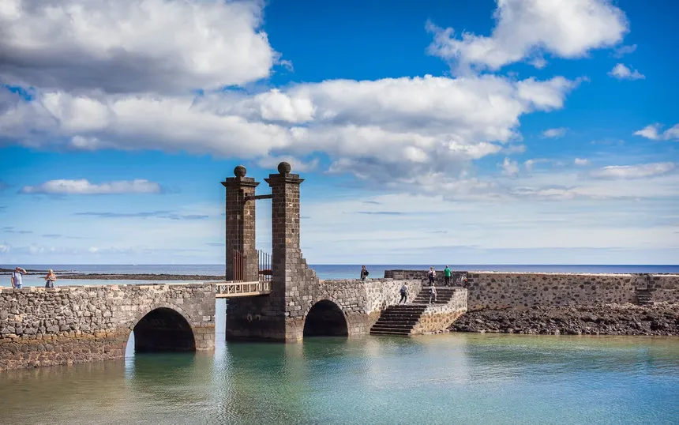

Personalities
César Manrique (1919–1992)

Born in Arrecife. An artist, architect and cultural activist, widely
known for his influence on Lanzarote's aesthetics, the integration
of art with the landscape, and urban planning that preserves the
island's natural character.
Jesús del Carmen Soto

A landscape architect and collaborator of Manrique, who introduced
aesthetic approaches that integrate the island's volcanic nature
into architecture and public spaces.
José Molina Orosa

A doctor from Arrecife who practiced on the island for many decades,
making important contributions to public health; the main hospital
is named after him.
Estanislao González Ferrer

A botanist from Lanzarote, author of important studies on local
flora, including several endemic species of the island.
Yonathan de León Machín

Current mayor of Arrecife (since July 2023), noted for being the
youngest mayor in the city's history.
Hecher Sosa

Hecher Sosa, known as the "Guanche Warrior," is a Canary
Islands–born MMA fighter competing in the UFC's bantamweight
division..
Manolo 'el del bombo'

A well-known popular character, part of the local festive and
cultural tradition.
Note: Information about these personalities comes from Wikipedia.
Historical curiosities
Castillo de San Gabriel and the "Islote del Quemado"

Another notable attraction is the Castillo de San Gabriel, built on
an islet called the "Islote del Quemado" (Burned Islet) because it
was set on fire during an attack by Turkish-Algerian pirates in
1586. The history reflects how vulnerable Arrecife was to maritime
attacks and how its coastal location, with volcanic rock reefs
surrounding and protecting its shoreline, even influenced the city's
name.
Puente de las Bolas

The access bridge to the castle, the well-known Puente de las Bolas
(Ball Bridge), has two stone balls in its structure and has become a
symbol of the historic town.
Orientation of churches
An archaeoastronomical study found that many ancient churches in
Lanzarote, including those in Arrecife, are not oriented eastward
(as was common in much of Europe) but rather north-northeastward, a
pattern that appears unique to the island. This suggests that wind
conditions, volcanic terrain, climate, and local tradition may have
had a greater influence than the canonical norm of ecclesiastical
orientation.